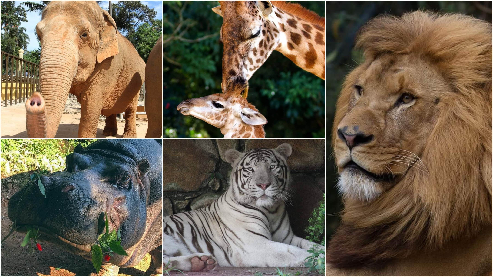
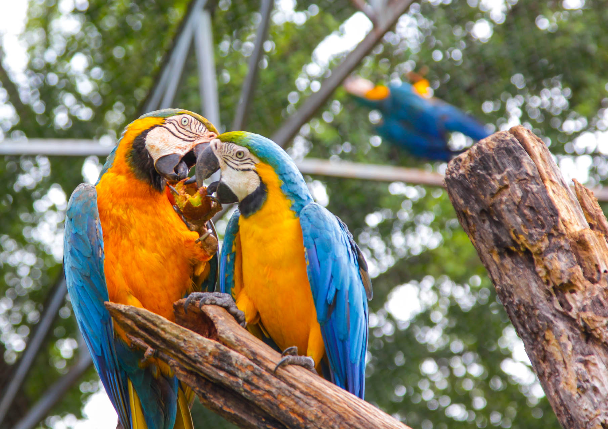
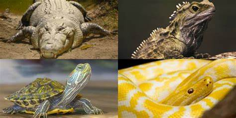
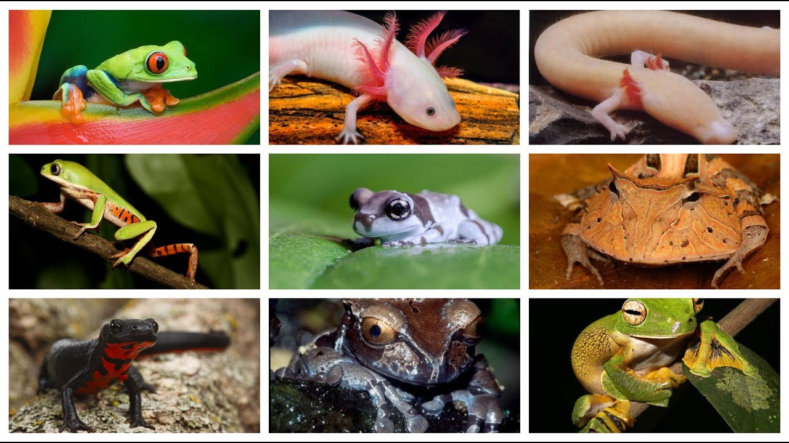
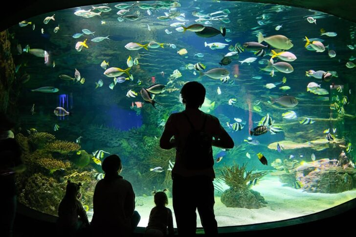

Conheça os incríveis animais do nosso zoológico!
Os mamíferos do BioZoo Rio incluem espécies incríveis como leões, elefantes e macacos. Eles são cuidados por especialistas que garantem alimentação balanceada e habitat adequado.
O zoológico abriga diversas espécies de aves, incluindo araras, corujas e águias. Nossos viveiros são projetados para simular seu habitat natural.
Os répteis do BioZoo Rio incluem jacarés, cobras e tartarugas. Eles são mantidos em ambientes climatizados que imitam seu habitat original.
Os anfíbios, como rãs e sapos, vivem em espaços úmidos e controlados para garantir sua sobrevivência e bem-estar.
O BioZoo Rio conta com um grande aquário, onde são encontrados peixes de água doce e salgada, proporcionando uma experiência única aos visitantes.
